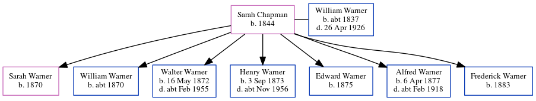

Sarah Warner (née Chapman) 1844 -
[ Home ] | [ Calendar ] | [ Surnames Index ] | [ Census Index ] | [ Family History ]Sarah Chapman, the wife of William Robert Warner (the three times great-uncle of Nigel Horne), was born in St Peters, Thanet, Kent, England in 18441,2 and married William (a builder's laborer with whom she had 7 children: Sarah Jane, William Jesse, Walter Chapman, Henry John, Edward, Alfred Stephen and Frederick) in St Peters on Feb 6, 18693.
During her life, she was living at Burtons Cottages, St Peters, Thanet, Kent, England on Apr 3, 18815; at Magdala Road, St Peters in Thanet on Apr 5, 18916; at Rumfields, St Peters in Thanet on Mar 31, 19011; and at Holly Lodge, Rumfields, St Peters in Thanet on Apr 2, 19114.
Children
- Sarah Jane was born in 1870
- William Jesse was born c. 1870
- Walter Chapman was born on May 16, 1872
- Henry John was born on Sep 3, 1873
- Edward was born in 1875
- Alfred Stephen was born on Apr 6, 1877
- Frederick was born in 1883
Citations
- 1901 England, Wales & Scotland Census - Findmypast (was age 57 and the wife of the head of the household)
- England Marriages 1538-1973 - Findmypast
- Kent, Canterbury Archdeaconry marriages 1538-1928 - Findmypast
- 1911 Census for England & Wales - Findmypast (was age 67 and the wife of the head of the household)
- 1881 England, Wales & Scotland Census - Findmypast (was age 37 and the wife of the head of the household)
- 1891 England, Wales & Scotland Census - Findmypast (was age 47 and the wife of the head of the household)
Media
1911 Census for England & Wales - GBC/1911/RG14/04509/0035/2
1881 England, Wales & Scotland Census - GBC/1881/0004870500
1891 England, Wales & Scotland Census - GBC/1891/0005914438
Family Tree
Generated by ged2site. Last updated on Jun 11, 2024